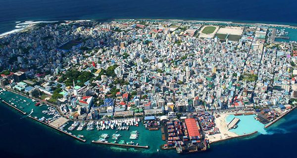
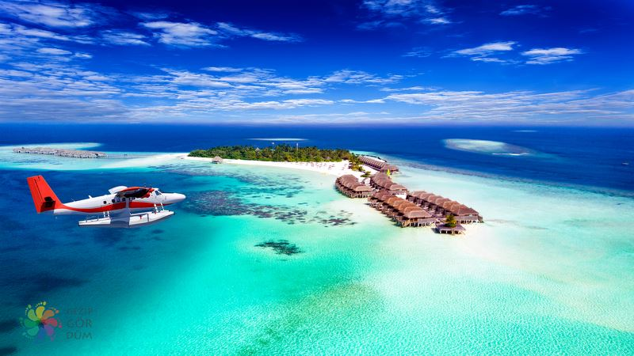
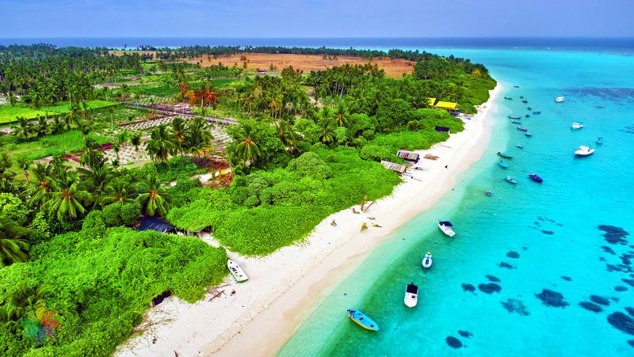

Hoşgeldiniz
Maldivler, resmî adıyla Maldiv Cumhuriyeti, Hint Okyanusu'nda 1.200 adadan oluşan bir devlettir. Hindistan'ın güneyinde ve Sri Lanka'nın yaklaşık 750 kilometre güneybatısında yer alır. Küresel iklim değişiklikleri yüzünden yüzyıl içerisinde sular altında kalacağı öngörülmektedir..
Maldivler Nasıl Bir Yer?
Masmavi denizi, aşk kokan havası, iri kar tanesi büyüklüğünde bembeyaz kumları ve keyifli spor aktiviteleriyle Maldivler adeta bir cennet! Kısacası “ölmeden önce mutlaka gidilmesi gereken yerler” listesinde en başta olabilecek bir yer. Ancak bu büyülü aşk adası için herkesin gitmeden önce bilmesi gereken bazı maddeler ve dikkat etmesi gereken bazı bilgiler var. Biliyorum, siz de şaşıracaksınız! O halde hadi hemen izlemeye başlayın.

Male
Malé, Maldivler Cumhuriyetinin başkenti. Ülke ticaretinin de merkezi olan şehrin 2004'teki nüfusu 81.647'dir. Male 26 Aralık 2004'te Hint Okyanusu'nda meydana gelen depremden sonra oluşan tsunamide büyük zarar görmüş ve şehrin üçte ikisi sular altında kalmıştır.

Maafushi
Maldivler'in yerleşime açık 200 adasından biridir. En son 2014 yılında yapılan sayıma göre adanın nüfusu 2.692 kişiden meydana gelmektedir. 2010'da hareketlenmeye başlayan turizm endüstrisi ile adanın nüfusunda artış meydana gelmiştir.

Meeru
Meeru Adası, Maldivler'deki Kuzey Malé Atoll'un en doğu ucunda bulunan bir adadır. Ekvatordaki Sri Lanka'nın güney batısında, başkent Male'den yaklaşık 50 kilometre uzakta bulunuyor.